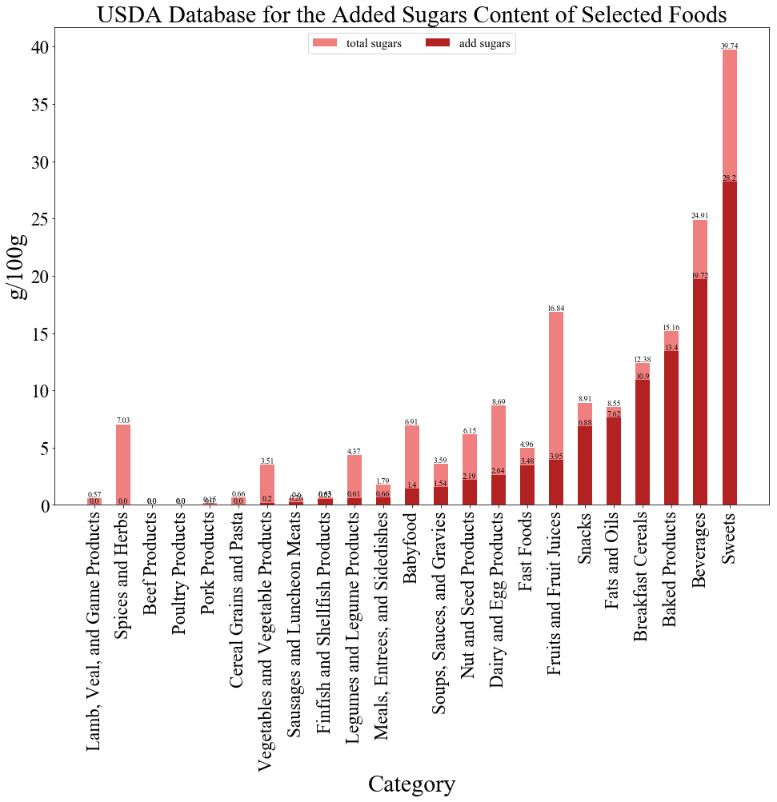
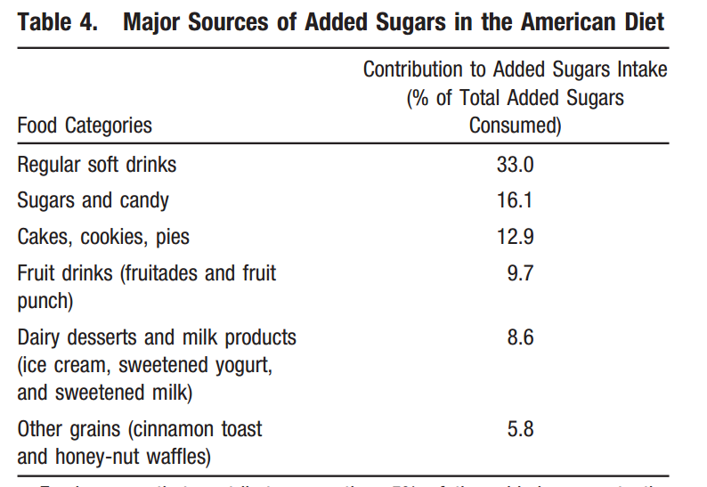
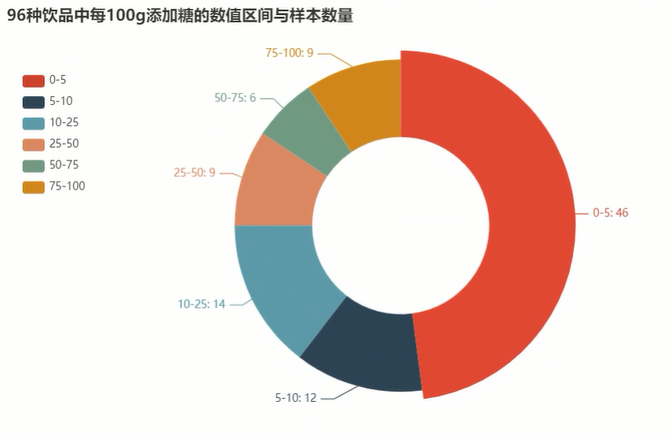
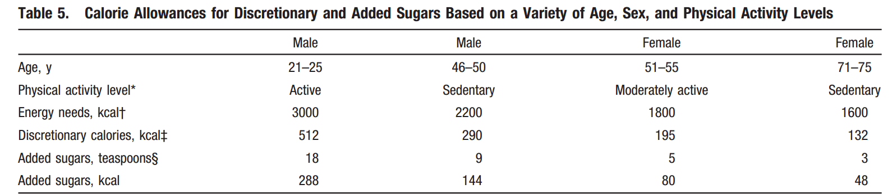

1999年皮尔斯伯里公司邀请各食品届领头羊，雀巢，卡夫，宝洁，可口可乐等参加会议，会议主题是如何应对新出现的全球性流行病—肥胖。卡夫公司的副总裁为大家展示了20年来美国肥胖儿童人数翻一番，并陈述肥胖可能引起的健康危机，如糖尿病，心脏疾病，高血压，胆囊疾病，骨关节炎，和三种癌症，乳腺癌，结肠癌，子宫癌。食品巨头们承受着来自社会的谴责，然而他们想的是利用自己的科学资源找出人们肥胖的其他因素—他们不想承担这个罪名，甚至继续开发可以抑制人减肥想法的食品。
这是《盐糖脂—食品巨头是如何操纵我们的》一书的序章内容，此书是普利策奖获得者迈克尔•莫斯的一本畅销书。本书从含糖制品对人们健康的威胁，食品巨头如何利用盐糖脂相互竞争，食品行业如何引导人们饮食习惯，到其中顶尖的研究者如何改变食品行业的方向等方面为读者介绍了几个食品巨头背后的故事。无论是消费者还是行业研究者，总能在这本书里找到使自己受益的知识。
先解释一下什么是糖，以便理解下文的数据库。简单碳水化合物(糖)是指单糖和双糖。单糖包括葡萄糖、半乳糖和果糖。果糖是水果和蔬菜中最常见的天然单糖。常见的双糖包括蔗糖(葡萄糖加果糖)，它存在于甘蔗中。自然产生的(内在的)糖是指糖是整个水果、蔬菜和奶制品中不可分割的一部分。添加糖(外源性)是指在食品加工或制备过程中添加到食品中的糖和糖浆，也包括在食品加工或制备过程中添加的糖和糖浆。总糖是指食物和饮料中所有的糖(自然产生的和添加的)。
首先，食物光有诱人的味道还不够，还必须有大量糖，脂肪和盐，才能让人达到暴饮暴食的境界。自然含糖的产品添加糖能让人更有食欲，比如奶制品加糖使儿童和青少年的饮食质量提高，暂时没有实验表明会对体重用影响。1974年斯科拉伐尼教授实验证明甜食可以使小白鼠过度饱食[3]。而过度饱食成为国际问题，在中国，第一次出现体重超标人数高过不达标人数， 根据国际医学杂志《柳叶刀》2019年发布的最新数据，中国有9000万肥胖人群，其中1200万属于重度肥胖，居全球首位。
人们，尤其是孩子对于食品的甜度，只要在极乐点之下，都希望越甜越好。霍华德•莫斯科维兹利用数学和计算的方法创造让人吃到“美到飞起”的食品，寻找不同产品的极乐点帮助不同公司“起死回生”。而“极乐点”也是他首先提出的概念，他了解人们会对单一而浓烈的味道感到疲劳，从而设计味道实验，发现人们对甜度的热爱会达到一个峰值，此后加入更多的糖也不能增加人们的满足感了，这个峰值就是极乐点。
食用过多含果糖饮料会导致血脂异常、空腹血糖升高、胰岛素敏感性降低和内脏脂肪增加，各种实验证明限制软饮料的摄入对儿童的体重有适度的有益影响。1987年，莫奈尔研究中心科学家托多夫实验，证明含糖汽水是导致肥胖的几大因素之一。实验中每日饮用高果糖玉米糖浆制成的普通汽水的实验对象，3周内体重上升1.5磅（约0.45kg），而饮用无糖汽水的实验对象体重并无太大差别。
为进一步证实汽水导致肥胖这一点，本书提到科学周刊《循环》2009的声明：美国心脏病协会声明饮食糖分过高引致肥胖和心血管疾病。
协会用了2006年美国农业部（USDA）发布的2038种，超市食品（分为23大类）的总含糖量和添加糖量。
我将USDA的数据根据不同品类食品计算选择食品的含糖量平均值，由此可见，糖果甜品一类无论是总含糖量还是食品加工中添加的糖浆都远超其他品类产品，每100g总含糖量达到39.74g，其中添加糖浆平均28.2g，而各种饮料每100g总含糖量达到24.91g，其中添加糖浆平均19.72g，其中，果汁类产品总含糖量很高，接近饮料的总含糖量，水果本身含糖量达到很高，所以很多文章说水果含糖量和饮料类似，这不准确。

这张图表示了美国人日常饮食中添加糖浆的主要来源，软饮料和糖果，蛋糕类占比最高。

既然饮料是糖类来源的大头，我单独拎出USDA数据库中选择的96种不同的饮料产品。从定义上来说，饮品包含纯净水、牛奶、咖啡、茶、热巧克力、果汁和软饮料。这里没有把碳酸饮料单独分类，可以看见低糖的饮品依旧占据市场重大比例，但依然可见，每100g中含有添加糖或糖浆超过50g的饮品数量占总样本数的15.6%，甚至有9例含糖量高达75%。很可惜美国农业部没有公开这些产品的名称，如果去网上用关键词，例如boiled soda to see how many sugar可以直观感受到碳酸饮料的含糖量十分惊人。

随着人们健康消费意识的升级，果汁，茶类饮料快速增长，碳酸饮料行业开始萎缩。根据《2017年中国饮料行业市场前景研究报告》指出，未来我国饮料行业发展潜力巨大，低热量饮料，健康营养饮料，冷藏果汁饮料等发展前景良好，从产品产量来看，2016年碳酸饮料类产量同比下降3.71%，果汁何蔬菜汁类同比增长1.02%。便利利店摆放饮料位置的趋势来看，冷藏柜中间的位置摆满了各类茶类饮品，其次是运动饮料，而肥宅快乐水这类碳酸饮料则摆在两旁靠下侧。这侧面说明消费者们近几年有避开多糖饮品的趋势，而超市货架管理员遵循这种趋势。从USDA数据来看，水果和果汁含糖量确实比饮品类平均含有更低的添加糖，盐糖脂一书也继续指出，为了满足人们既想喝饮料又想选择健康的诉求，食品巨头们纷纷尝试制作低卡，零糖的饮品。
然而果汁类，茶类，功能性饮品并不能让人更健康。盐糖脂一书记录了果珍诞生的历史，实验室成员起初加入橙汁含有的营养成分，维生素和矿物质，这样果汁变得十分苦涩。当时市场部主管霍华德布鲁姆奎斯特说，大多数人只会将橙汁和维生素C联系在一起，而非实验室添加的营养物质。技术人员只要在果汁中添加维C这一种成分并且不影响味道即可。这种行为只是为了安抚消费者情绪，但并不会减少公司的糖分配方。
而并非避开含糖饮料和糖果就能避免摄入额外的糖。我们的生活难以避开糖类物质。书中同时记述了早餐谷物市场中几大品牌的含糖量。1975年美国蛀牙人数上升，一名叫牙医调查了超市78种麦片发现其中1/3含糖量高达25%-50%，最高的一种达到70.8%.
食品工业中有美拉德反应，这种反应必须有糖类的加入，它让食品加工后会呈现一种诱人的金黄色或褐色，这使人更有食欲，也会降低蛋白质的营养质量。于面包厂，他们所生产的所有面包都依赖糖，例如高果糖玉米糖浆多用于发酵产业，让面包蓬松或制酒工业。不放糖的面包，失去美丽的色泽，又变得萎缩扁平。
最后放出美国心脏病协会给出的建议最多每日摄入添加糖量（单位是茶匙）。协会建议，以中年女性为例，每日糖分摄入不多于5茶匙，相当于半听可乐，而此时美国人均每日摄入糖为22茶匙[2]。

[1] 食物血糖生成指数在糖尿病营养教育中的应用研究
[2] Dietary Sugars Intake and Cardiovascular Health: A Scientific Statement Fromthe American Heart Association
[3] Dietaryobesity in adult rats: Similarities to hypothalamic and human obesitysyndromes